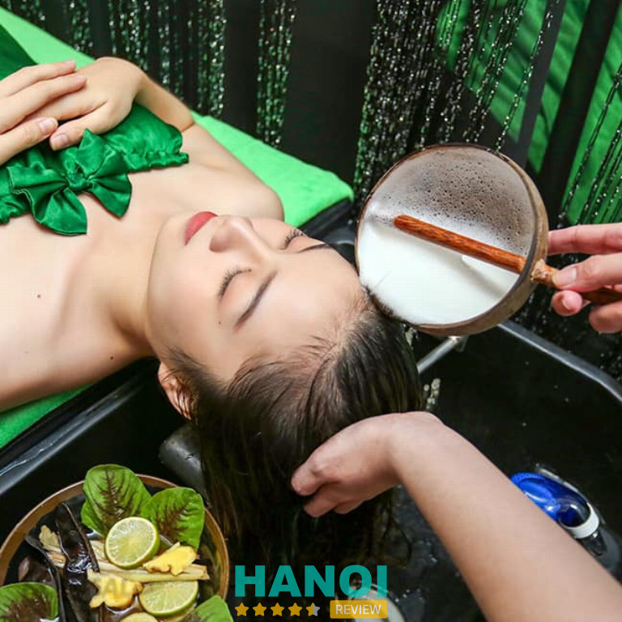
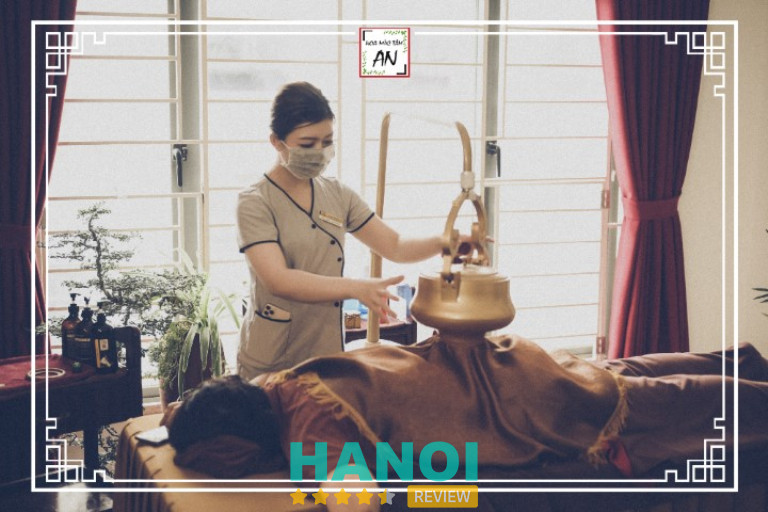
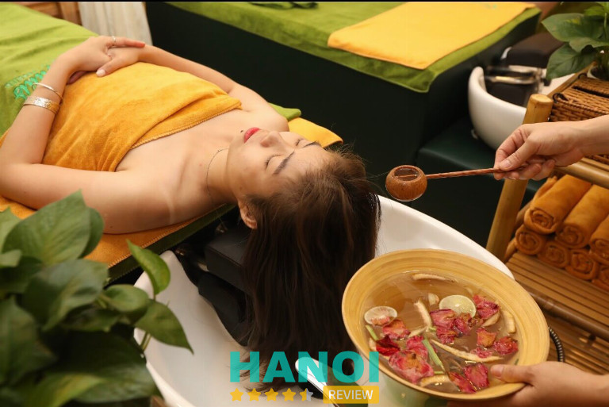
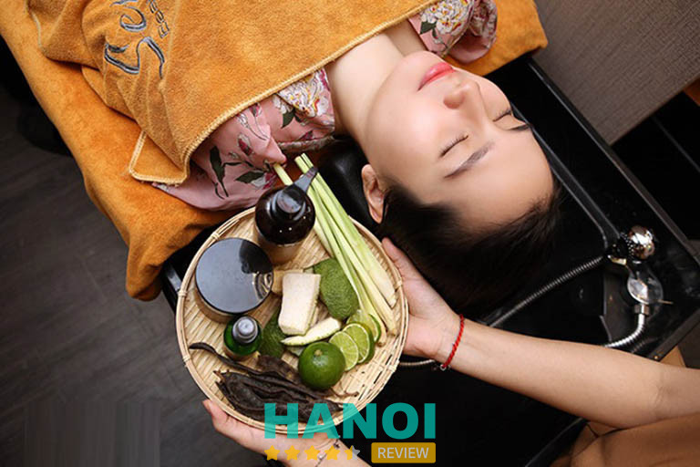

10 Spa gội đầu dưỡng sinh tại Hà Nội sang xịn hàng đầu
Để sở hữu được mái tóc suôn mượt, mềm mại óng ả thì các spa gội đầu thảo dược dưỡng sinh tại Hà Nội là bí quyết của nhiều chị em. Đây sẽ là nơi không chỉ mang đến cho bạn một sản phẩm chăm sóc tóc hoàn hảo mà còn đem đến cho bạn cảm giác thư giãn bởi phương pháp massage chuẩn đông y.
Top 10 Spa gội đầu dưỡng sinh bằng thảo dược ở Hà Nội
Ngày nay thay vì gội đầu bằng dầu gội thông thường sẽ mất đi độ óng mượt tự nhiên của mái tóc thì nhiều người chọn gội đầu bằng thảo dược với nhiều tính năng vượt trội. Đây là một trong những dịch vụ được đông đảo các tín đồ làm đẹp ưa chuộng tại các spa.
Sau đây là 10 spa chuyên gội đầu thảo dược dưỡng sinh chất lượng nhất Hà Nội được HaNoiReview tổng hợp dựa trên các lời nhận xét khách quan của khách hàng.
Kiều Anh Beauty
Kiều Anh Beauty một trong những spa cung cấp đa dạng dịch vụ làm đẹp và được khách hàng đánh giá cao về chất lượng dịch vụ. Tại đây mọi loại hình chăm sóc sắc đẹp đều hướng đến phương pháp dưỡng sinh đông y sử dụng những dược liệu và sản phẩm chiết xuất từ thiên nhiên.
Nổi bật là dịch vụ gội đầu thảo dược dưỡng sinh được nhiều phái đẹp tại Hà Nội yêu thích và lựa chọn mỗi khi có dịp ghé đến spa. Với nguyên liệu được xuất xứ từ 100% thảo mộc an toàn và lành tính cho da đầu giúp phục hồi xơ rối nhanh chóng.
Tại Kiều Anh Beauty, gội đầu thảo mộc kết hợp với liệu pháp massage da mặt và phần đầu giúp cơ thể lưu thông khí huyết, đào thải chất độc, cải thiện hiệu quả cơn đau nhức mỏi và đem đến cảm giác thoải mái nhất cho khách hàng. Mọi thao tác được thực hiện bởi đội ngũ chuyên viên dày dặn kinh nghiệm, nắm vững các kỹ thuật massage và được đào tạo bài bản.
Đến với Kiều Anh bạn không chỉ có những phút giây thư giãn cùng với không gian spa yên bình, sâu lắng mà còn mang đến cho bạn mái tóc chắc khỏe, nuôi dưỡng từ sâu bên trong. Các loại dầu gội thảo dược tại đây luôn được nung ấm vừa phải và chọn lựa nguyên liệu phù hợp với từng loại da dầu.
Ngoài ra, spa còn có các hình thức trị liệu khác nhau để chăm sóc cơ thể như massage body đá muối, làm đẹp bằng Đông y, xông đá muối Himalaya, sục tắm lá thuốc của người Dao….với mức giá hợp lý, vừa túi tiền của khách hàng.
Thông tin liên hệ:
- Địa chỉ: 296 Nghi Tàm, P. Yên Phụ, Q. Tây Hồ, Hà Nội
- Điện thoại: 024 6271 1234
- Email: kieuanhbeauty@gmail.com
- Website: kieuanhbeauty.vn
Viện Dưỡng sinh thẩm mỹ Đông y Mudra House
Mudra House là một cái tên không quá xa lạ đối với nhiều người tại Hà Nội, đặc biệt là hội chị em phụ nữ trước và sau sinh. Với hình thức chăm sóc sức khỏe đông y dưỡng sinh vừa nuôi dưỡng sắc đẹp từ sâu bên trong vừa cải thiện tình trạng sức khỏe bằng phương pháp ấn huyệt.
Đối với dịch vụ gội đầu dưỡng sinh tại Mudra House áp dụng kỹ thuật chăm sóc da đầu của Tập đoàn Gouyitang Mudra phối hợp với dòng sản phẩm dầu gội thảo dược được nghiên cứu từ hoạt chất tự nhiên bởi nhiều chuyên gia hàng đầu.

Sản phẩm gội đầu luôn đảm bảo an toàn tuyệt đối, mang đến cảm giác dịu nhẹ cho da đầu và ngăn ngừa rụng tóc, hỗ trợ phục hồi hư tổn. Mặc dù nguồn nguyên liệu hoàn toàn từ thiên nhiên nhưng làm rất sạch da đầu, loại bỏ dầu nhờn và không gây bết rít sau khi hoàn thành xong liệu trình.
Hơn thế nữa, quá trình gội đầu thảo dược dưỡng sinh còn kết hợp với thao tác massage nhẹ nhàng, thuần thục giúp thảo dược thấm sâu vào da đầu và đẩy nhanh quá trình hấp thụ dưỡng chất mang lại hiệu quả rõ rệt sau một liệu trình. Cùng với đó, các kỹ thuật bấm huyệt, xoa bóp vai gáy điêu luyện giúp cơ thể giảm đau mỏi và lưu thông tuần hoàn máu không bị ách tắc do ít vận động.
Không những vậy, Mudra House còn sở hữu đội ngũ nhân viên với phong cách làm việc chuyên nghiệp và chăm sóc tận tâm chinh phục mọi yêu cầu khắc khe nhất của khách hàng.
Thông tin liên hệ:
- Địa chỉ: 28N Phạm Hồng Thái, P. Trúc Bạch, Q. Ba Đình, Hà Nội
- Điện thoại: 0707 037 505
- Email: ceomudra2018@gmail.com
- Website: mudra.vn
- Fanpage: FB.com/mudra28phamhongthai
GỢI Ý: 10 Thẩm mỹ viện căng chỉ trẻ hóa tại Hà Nội hiệu quả, an toàn
Spa Phố Cổ
Ngoài nổi tiếng với dịch vụ tạo kiểu tóc hợp thời trang, Spa Phố Cổ còn thu hút nhiều tệp khách hàng qua phương pháp khỏe đẹp gội đầu thảo dược. Trải qua một thời gian hoạt động, nơi đây được nhiều khách hàng ưu ái đặc niềm tin vào chất lượng dịch vụ lẫn phong cách phục vụ chu đáo, niềm nở.
Mặc dù đây không phải spa làm đẹp nhưng dịch vụ gội đầu thảo dược dưỡng sinh tại Spa Phố Cổ đang “làm mưa làm gió” trong thời gian gần đây với nhiều ưu điểm vượt trội hơn gội đầu thông thường.
Đến với Spa Phố Cổ, bạn sẽ tận hưởng không gian yên tĩnh cùng với những bản nhạc nhẹ nhàng, sâu lắng. Cùng với đó là phong cách thiết kế phòng gội độc đáo, đầy tính nghệ thuật đem đến cảm giác thích thú cho bạn. Bên cạnh đầu tư cơ sở vật chất cho không gian, Spa Phố Cổ còn chú trọng vào xây dựng chất lượng dịch vụ hoàn hảo tuyệt đối. Tại đây luôn chỉnh chu trong từng quy trình chăm sóc da đầu cho khách và thực hiện đúng chuẩn từng bước.
Nước gội thảo dược tại đây được chế tác đậm đặc với nhiều nguyên liệu tự nhiên, không chứa các hóa chất độc hại phù hợp với mọi loại da đầu. Và hơn hết, phối hợp với kỹ thuật massage, ấn huyệt ở vùng đầu, vai, cổ tạo cảm giác dễ chịu, giải tỏa căng thẳng.
Thông tin liên hệ:
- Địa chỉ: 28 Hàng Hành, P. Hàng Trống, Q. Hoàn Kiếm, Hà Nội
- Điện thoại: 0974 567 973
- Fanpage: FB.com/goidauduongsinhphoco
Hoa Mộc Tâm An
Nếu bạn đang tìm kiếm một spa có dịch vụ chăm sóc sức khỏe dưỡng sinh đông y thì Hoa Mộc Tâm An là một cái tên mà bạn nên biết đến. Đến với Hoa Mộc Tâm An bạn sẽ có cơ hội trải nghiệm phương pháp gội đầu thảo dược được chế tác từ các nguyên liệu truyền thống và những bài thuốc được lưu truyền bí kíp.

Thấu hiểu được những bộn bề, khó khăn và gặp nhiều vấn đề căng thẳng trong cuộc sống của nhiều người, Hoa Mộc Tâm An cho ra đời dịch vụ gội đầu thảo dược không chỉ giúp bạn cải thiện mái tóc giảm gãy rụng, phục hồi xơ yếu mà còn giải quyết triệt để các vấn đề về thiếu máu não, lưu thông khí quyết, giảm thiểu áp lực và bài độc các chất độc hại.
Với phương pháp này khác hoàn toàn với kiểu gội đầu thông thường sử dụng dầu gội với thành phần hoàn toàn từ thảo dược thân thiện với môi trường và không gây tác dụng phụ cho da đầu. Và hơn thế nữa, áp dụng với kỹ thuật xoa bóp, bấm huyệt từ vùng vai gáy đến vùng đầu tác động đến các hệ thần kinh, mở các kinh huyệt giúp cơ thể sảng khoái và thư thái.
Các kỹ thuật viên của Hoa Mộc Tâm An với tay nghề cao, có kiến thức sâu rộng về y học cổ truyền và thuần thục mọi thác tác đem đến trải nghiệm vô cùng ấn tượng cho khách hàng. Đây sẽ là phương pháp massage lý tưởng để giải quyết các bệnh lý về tiền đình, người hay đau nhức vai gáy, mất ngủ,..
Tại spa có 3 loại canh thuốc chính được nấu từ loại dược liệu quý trong vòng vài giờ đồng hồ như: canh bài độc da đầu, canh giảm áp kiện tóc, canh an thần, dưỡng tóc. Mọi quy trình được thực hiện tỉ mỉ trong từng bước và diễn ra trong vòng 60 phút.
Đến đây bạn sẽ được đội ngũ nhân viên chăm sóc tận tình, tư vấn kỹ lưỡng cho bạn từng liệu trình và lựa chọn bài thuốc phù hợp. Ngoài ra, Hoa Mộc Tâm An còn gây ấn tượng với khách hàng bởi không gian hài hòa, cơ sở vật chất hiện đại đi kèm với tiếng nhạc du dương tạo nên một nơi hưởng thụ tuyệt vời cho khách hàng.
Thông tin liên hệ:
- Địa chỉ: 104 Trung Phụng, P. Trung Phụng, Q. Đống Đa, Hà Nội
- Điện thoại: 0855 162 555
- Email: hmtaspa@gmail.com
- Website: hoamoctamanspa.vn
- Fanpage: FB.com/hmtaspa
Arum Spa
Sau những ngày làm việc và học tập mệt mỏi bạn muốn có những giây phút thư giãn và nạp lại năng lượng cho ngày mới thì Arum Spa chính là giải pháp hiệu quả dành cho bạn. Tại đây có rất nhiều liệu trình chăm sóc khỏe đẹp chất lượng cao, từng bước thực hiện theo tiêu chuẩn y khoa được thực hiện bởi những kỹ thuật viên tay nghề cao, có kinh nghiệm thâm niên.
Và một trong những dịch vụ được nhiều chị em phụ nữ quan tâm nhất là gội đầu thảo dược dưỡng sinh. Qua từng năm hoạt động và cải thiện nhiều phương pháp chăm sóc sắc đẹp, Arum Spa nhận thấy đây là dịch vụ mang lại hiệu quả vượt trội đối với nhiều đối tượng khách.
Đến Arum spa bạn sẽ bị ấn tượng bởi phòng gội được thiết kế theo phong cách cổ đại, không gian ấm cúng và sử dụng gam màu tự nhiên bao trùm cả căn phòng tôn lên nét thẩm mỹ cho bố cục chung của không gian. Đi kèm với đó, tân trang các thiết bị công nghệ hiện đại hỗ trợ đắc lực trong quá trình chăm sóc làm đẹp.
Gội đầu thảo dược tại Arum Spa vừa sử dụng sản phẩm với công thức chuyên biệt thiên nhiên vừa kết hợp hoàn hảo giữa kỹ năng xoa bóp nhẹ nhàng sinh Đông y và thao tác ấn huyệt, day ở vùng đầu và vùng lưng. Nhằm đưa các dưỡng chất thẩm thấu sâu vào da đầu, sạch sâu da đầu và kích thích mọc tóc. Đồng thời, cũng giúp cơ thể giảm đau nhức, thông huyệt đạo và bài độc các chất độc hại trong cơ thể.
Thông tin liên hệ:
- Địa chỉ: 37 – liền kề 6A, Làng Việt kiều Châu Âu, Hà Đông, Hà Nội
- Điện thoại: 0968 013 886
- Email: arumspa.hadong@gmail.com
- Fanpage: FB.com/arumspa.vn
THAM KHẢO: 10 Địa chỉ bán son môi tại Hà Nội uy tín, chính hãng, giá rẻ
HP Spa
Được thành lập vào năm 2017, HP Spa tự hào là chuỗi spa đồng hành chăm sóc sức khỏe theo xu hướng dưỡng sinh Đông y với nhiều khách hàng trên toàn quốc. Với hơn 40 chi nhánh trải dài trên nhiều tỉnh thành của Việt Nam, xây dựng dịch vụ chất lượng và an toàn nhất đến tay người tiêu dùng.
Tại HP Spa được nhiều người biết đến qua các dịch vụ chăm sóc da cơ bản và chăm sóc da chuyên sâu. Trong đó phải kể đến là phương pháp gội đầu thảo dược dưỡng sinh cùng với kỹ thuật massage trị liệu Đông y.
Với liệu trình gội đầu dưỡng sinh tại HP Spa vừa giúp chân tóc khỏe mạnh và nuôi dưỡng tóc tốt hơn nhờ các tinh chất tự nhiên của thảo mộc vừa giúp mạch máu lưu thông, giải quyết tình trạng tê bì tứ chi và cải thiện giấc ngủ sâu hơn.
Khi đến trải nghiệm dịch vụ gội đầu thảo dược dưỡng sinh tại HP spa bạn sẽ thực sự chìm đắm vào mùi hương thơm ngát của vỏ bưởi cùng với không gian đậm chất tinh thần dưỡng sinh tạo cảm giác thư thả và bình yên.
HP Spa cam kết sản phẩm được chiết xuất 100% thiên nhiên vừa đem lại hiệu quả trị liệu tốt cho sức khỏe, vừa chăm sóc tóc thêm mượt mà. Quy trình 5 bước thực hiện gội đầu thảo dược tại HP Spa:
- Bước 1: Tư vấn da đầu
- Bước 2: Massage làm thư giãn vùng đầu, vai và gáy.
- Bước 3: Dùng sản phẩm canh thảo dược gội đầu
- Bước 4: Gội đầu bằng dầu thủ đạo thang kết hợp massage cổ, vai, gáy
- Bước 5: Sấy khô và kiểm tra lại da đầu
- Bước 5: Xịt dưỡng chất làm mềm tóc để giữ nước và cân bằng độ pH
- Bước 5: Bôi chất tơ tằm thiên nhiên để dưỡng tóc
Thông tin liên hệ:
- Địa chỉ: A6/D11 – A7/D11, Ngõ 84 Trần Thái Tông, P. Dịch Vọng Hậu, Q. Cầu Giấy, Hà Nội
- Điện thoại: 0978 758 089
- Fanpage: FB.com/HBspa.net
Mai Quỳnh Spa
Chất lượng dịch vụ tại Mai Quỳnh Spa chính là chìa khóa để nâng tầm thương hiệu và giữ chân khách hàng sử dụng lâu dài các dịch vụ tại đây. Nơi đâu được nhiều chị em phụ nữ tại Hà Nội đánh giá cao về mô hình chăm sóc sức khỏe và sắc đẹp lẫn phong cách phục vụ nhiệt tình chu đáo của bộ phận chăm sóc khách hàng.
Tại Mai Quỳnh Spa phong phú các loại hình làm làm đẹp đáp ứng đúng nhu cầu của thị hiếu như phun môi, phun mí, làm nail, nối mi, massage mặt,…Tuy nhiên dịch vụ chủ lực được đông đảo khách hàng yêu thích là gội đầu thảo dược.

Khi đặt chân đến Mai Quỳnh bạn sẽ bị thu hút bởi sự thiết kế không gian tinh tế, bắt mắt, sang trọng và chọn bố cục cân đối thuận mắt người xem như tạo sự kích cầu cho khách hàng. Và hơn thế nữa, điểm thêm ở các phòng gội là hương tinh dầu dễ chịu cảm giác tươi mới và thư thái trong suốt quá trình gội đầu.
Bên cạnh đó, để nâng cao chất lượng dịch vụ hơn Mai Quỳnh còn đầu tư máy móc công nghệ tiên tiến được nhập khẩu trực tiếp tại các nước Châu Âu để giúp tiến trình làm đẹp hiệu quả hơn.
Đối với loại hình gội đầu thảo dược tại spa, quy trình được thực hiện đúng chuẩn 5 bước. Sản phẩm sử dụng trong cả quá trình được chắt tinh kỹ lưỡng từ những thảo dược thuần tính tự nhiên. Sau đó kèm theo tiến trình massage và bấm huyệt theo trật tự từ nửa đầu trước đến nửa đầu sau và vùng vai gáy để thư giãn hệ thống dây thần kinh ở vùng đầu và cải thiện tuần hoàn huyết dịch.
Ngoài ra, mức giá gội đầu thảo dược tại Mai Quỳnh Spa cũng được cho là hợp lý với nhiều tầng lớp khách hàng, giá dao động khoảng 200.000 – 300.000 VNĐ, liệu trình thực hiện trong vòng 30 đến 45 phút.
Thông tin liên hệ:
- Địa chỉ: Lô số 11 Khu Đô Thị Thanh Hà Cienco 5 – Hà Nội
- Điện thoại: 0944 005 669
- Fanpage: FB.com/moixinhmaydepspa
THAM KHẢO: 10 Địa chỉ massage body trị liệu tại Hà Nội dịch vụ tốt nhất
Gội đầu dưỡng sinh Nhà An
Nhà An là một địa điểm quen thuộc của nhiều tín đồ làm đẹp tại Hà Nội. Với dịch vụ chuyên nghiệp cùng và sản phẩm chất lượng chính là yêu tố nòng cốt làm nên tên tuổi của thương hiệu Nhà An.
Nơi đây còn tạo sự ấn tượng trong lòng khách hàng bởi phong cách làm việc chu đáo, tận tâm và giải đáp mọi thắc mắc của khách hàng một cách chi tiết nhất. Hơn thế nữa, Đội ngũ kỹ thuật viên massage có kinh nghiệm chuyên môn cao, được đào tạo bài bản với phương châm hết lòng vì khách hàng.

Mặc dù tại Nhà An có nhiều dịch vụ chăm sóc làm đẹp như điều trị làm hồng, se khít, trị thâm, chăm sóc, giảm béo…tuy nhiên gội đầu thảo dược được nhiều khách hàng sử dụng và nhận xét tích cực bởi quy trình đơn giản nhưng lợi ích mang lại cực kì cao.
Các sản phẩm gội đầu thảo dược tại Elly được lấy nguyên liệu từ những loại thảo mộc an toàn và lành tính có chức năng nuôi dưỡng nang tóc, ngăn ngừa rụng tóc và giúp tóc phát triển mọc nhanh hơn. Đi kèm với liệu trình gội đầu thảo dược là phương pháp đả thông kinh lạc vùng đầu, cổ và vai gáy làm tinh thần thoải mái và giảm chứng rối loạn tiền đình.
Ngoài ra, Nhà An cũng có nhiều chính sách ưu đãi đặc biệt dành cho những khách hàng thân quen và áp dụng giảm giá cho các dịch vụ khác vào các ngày lễ trong năm nhằm gửi lời tri ân đến khách hàng.
Thông tin liên hệ:
- Địa chỉ: 56 Ngõ 10 Nguyễn Thị Định, P. Trung Hoà, Q. Cầu Giấy, Hà Nội
- Điện thoại: 0963 389 090
- Fanpage: FB.com/61562633621720
Ann Marrie Skincare & Clinic
Gội đầu thảo dược là một phương pháp chăm sóc sức khỏe khá quen thuộc của nhiều người, đặc biệt là hội chị em văn phòng. Nếu bạn đang tìm một spa tại Hà Nội chất lượng hàng đầu với dịch vụ đó thì Ann Marrie Skincare & Clinic là cái tên tiếp theo mà bạn không nên bỏ lỡ.
Spa tại đây được thiết kế theo chuẩn phong cách Hàn Quốc với tông màu dịu nhẹ và lựa chọn nội thất sang trọng đẳng cấp biến không gian như thiên đường nghỉ dưỡng. Kim chỉ nam của Ann Marrie là luôn chú trọng vào chất lượng hơn số lượng và làm việc bằng cái tâm để đem đến dịch vụ xứng đáng với mức tiền mà khách hàng chi trả.
Điểm độc đáo của dịch vụ gội đầu thảo dược tại Ann Marrie không chỉ là sử dụng nguyên liên thiên nhiên như lá dâu, vỏ bưởi, hà thủ ô, lá dứa.. mà còn là sự kết hợp của kĩ thuật massage, bấm huyệt chuyên nghiệp bởi nhân viên lành nghề, sở hữu kinh nghiệm thực hành thâm niên.
Ngoài ra, Ann Marrie còn đào tạo bài bản đội hình tư vấn viên chất lượng, am hiểu kiến thức về lĩnh vực chăm sóc sức khỏe, làm đẹp và kỹ năng giao tiếp với khách hàng. Chính vì thể khi đến với Ann Marrie bạn không cần phải quá lo lắng khi không biết nên sử dụng dịch vụ nào phù hợp nhất với bản thân. Bạn sẽ được gợi ý phương pháp thông qua tình trạng sức khỏe hay nhu cầu mong muốn của bản thân.
Chưa dùng lại ở đó, Ann Marrie luôn cập nhật nhiều công nghệ mới, áp dụng máy móc tân tiến vào các dịch vụ chăm sóc sức khỏe sắc đẹp. Cùng với đa dạng các phương pháp làm đẹp hiện đại, nơi đây hứa hẹn sẽ mang đến cho bạn một trải nghiệm tuyệt hảo nhất.
Thông tin liên hệ:
- Địa chỉ: Tầng 2, 1N7A Nguyễn Thị Thập, Q. Thanh Xuân, Hà Nội
- Điện thoại: 0949 923 333
- Fanpage: FB.com/annmarie.clinic
Spa Đông y Bảo Xuân Đường
Spa Đông y Bảo Xuân Đường là địa điểm quen thuộc của nhiều người tại Hà Nội với dịch vụ gội đầu thảo dược dưỡng sinh theo phong cách Ấn Độ. Với nguồn nguyên liệu 100% từ thiên nhiên kết hợp với thảo dược quý đảm bảo an toàn tuyệt đối.
Khác với những spa gội đầu thông thường, nơi đây nổi bật là áp dụng những viên đá nóng và nhiều loại hương liệu, tinh dầu bí truyền của Ấn Độ vừa là giải pháp làm chậm quá trình lão hóa cho tóc vừa giúp cơ thể thẩm thấu nhiều tinh chất bổ dưỡng.
Dịch vụ gội đầu thảo dược tại Đông y Bảo Xuân Đường còn áp dụng với các động tác xoa bóp nhẹ nhàng, uyển chuyển qua bàn tay khéo léo của kỹ thuật viên tại spa sẽ giúp cơ thể thư giản hoàn toàn, đồng thời làm da đầu sạch sẽ và cân bằng độ PH, dưỡng ẩm tốt.
Một điểm đặc biệt tại Spa Đông y Bảo Xuân Đường đầu tư vào không gian phòng gội theo phong cách mộc mạc, tối giản và cách bày trí các sản phẩm bắt mắt. Đây được xem là một dịch vụ độc đáo, đáng để trải nghiệm để mang lại lợi ích cho sức khỏe của bạn.
Thông tin liên hệ:
- Địa chỉ: Đối diện Chung cư Thăng Long Victory An Thọ – An Khánh – Hoài Đức – Hà Nội
- Điện thoại: 0967 732 659
- Fanpage: FB.com/spabaoxuanduong
5 Tiêu chí chọn spa gội đầu thảo dược dưỡng sinh chất lượng
Ngày nay, xu hướng gội đầu dưỡng sinh ngày càng phổ biến và được nhiều người ưa chuộng. Song song với điều đó là các cơ sở spa mọc lên khắp mọi ngõ hẻm trong lòng thành phố khiến bạn khó lựa chọn đâu là nơi uy tín để tự tin trải nghiệm dịch vụ. Sau đây là 5 tiêu chí để đánh giá được mức độ chất lượng của spa mà bạn đọc cần xem xét:
- Nguyên liệu của dầu gội thảo dược: bạn có thể tìm hiểu qua website hoặc fanpage cơ sở đó về nguồn gốc thành phần của sản phẩm chăm sóc tóc để bảo đảm an toàn cho da đầu, đặc biệt là những da đầu dễ kích ứng nên ưu tiên sản phẩm có chiết xuất từ thiên nhiên
- Không gian spa: đây cũng là một yếu tố khá quan trọng để đánh giá được sự chuyên nghiệp và chất lượng tại cơ sở đó. Bởi vì một nơi sạch sẽ, thoáng mát và phù hợp sẽ mang đến cho bạn cảm giác dễ chịu, được tận hưởng thoải mái.
- Xem lượt nhận xét từ khách hàng cũ: nguồn thông tin khách quan nhất giúp bạn biết rõ hơn về chất lượng dịch vụ chính là tham khảo những phản hồi để cân nhắc việc lựa chọn.
- Đội ngũ kỹ thuật viên có nhiều năm kinh nghiệm: các kỹ thuật viên phải là người có chuyên môn cao, tay nghề vững, thuần thục các thao tác massage, day ấn huyệt đúng vị trí và động tác nhẹ nhàng không gây đau đớn cho khách hàng.
- Chi phí dịch vụ: ngoài những yếu tố trên thì giá cả cũng là một yếu tố chính quyết định đến sự lựa chọn của khách hàng. Bạn có thể tham khảo giá ở nhiều địa chỉ và cân nhắc cho hợp lý. Tuy nhiên bạn cũng không nên chọn những spa có mức giá quá thấp vì có thể chất lượng sẽ rất kém.
Bài viết trên là tổng hợp 10 spa gội đầu thảo dược uy tín tại Hà Nội. Hy vọng với những thông tin mà HaNoiReview cung cấp, bạn đọc sẽ chọn được một cơ sở ưng ý cho bản thân và liên hệ theo thông tin bên dưới để đặt lịch trước khi đến tránh phải chờ đợi quá lâu.
Có thể bạn quan tâm
- 10 Bác sĩ phẫu thuật thẩm mỹ tại Hà Nội giỏi, mát tay nhất
- 5 Địa chỉ thẩm mỹ vùng kín tại Hà Nội an toàn, làm đẹp nhất
- 10 Địa chỉ phun xăm thẩm mỹ tại Hà Nội đẹp, mực xịn, giá tốt
- 10 Tiệm làm nail tại Hà Nội dịch vụ chất lượng, khách đông nườm nượp
DOANH NGHIỆP: Đăng tải thông tin MIỄN PHÍ.
Tin đọc nhiều


11 Địa chỉ cắt tóc nữ tại Hà Nội đẹp nhất, nhiều chị em tìm...
Việc tìm kiếm các địa chỉ cắt tóc nữ tại Hà Nội nổi tiếng và uy tín đang là nhu cầu được rất nhiều chị...

7 Tiệm làm tóc ở Hoàn Kiếm đẹp, chất lượng, giá hợp lý
Bạn đang tìm một tiệm làm tóc ở quận Hoàn Kiếm để thay đổi phong cách, chăm sóc tóc đẹp và khỏe hơn? Nơi đây...

5 Tiệm làm tóc ở quận Ba Đình chất lượng, uy tín
Nếu bạn đang tìm kiếm trải nghiệm làm đẹp hoàn hảo, các tiệm làm tóc ở quận Ba Đình mang đến dịch vụ chuyên nghiệp,...

5 Địa chỉ gội đầu dưỡng sinh quận Ba Đình chuẩn xịn, thư giãn
Để có được mái tóc sạch sẽ, khỏe mạnh và suôn mượt, bạn có thể tìm đến các địa chỉ gội đầu dưỡng sinh quận...

Trở thành người đầu tiên bình luận cho bài viết này!